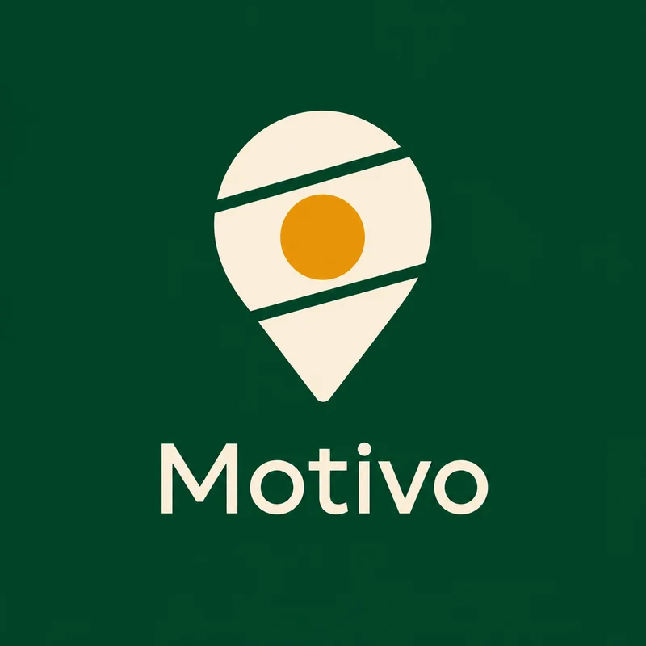

MOTIVO · EIN PROJEKT VON NW VISUALS
Fotospots finden.
Die nächste Fototour planen.
Wo steht die Kamera, wann passt das Licht und wie kommst du hin? Motivo soll dir helfen, Fotomotive zu entdecken und deinen Besuch vorzubereiten – vom Parkplatz bis zum Aufnahmepunkt.
iPhone, iPhone Duo und iPad · In Entwicklung

Von der Motivsuche bis zur Aufnahme
Motivo ist zunächst für Deutschland, Österreich und die Schweiz geplant.
Fotospots entdecken
Durchsuche die Karte nach Regionen und Motiven: Berge, Seen, Wasserfälle, Stadtansichten und Architektur. Suche nach einem konkreten Ort oder entdecke Spots in deiner Umgebung.
Licht und Anreise planen
Spotdetails sollen Aufnahmepunkt, Anfahrt, Parkplatz und Fußweg zeigen, soweit geprüft. Für größere Motive sind mehrere Aufnahmepunkte vorgesehen. Fototipps helfen bei Perspektive und Licht. Dazu sind Zeiten für Sonnenaufgang, Sonnenuntergang sowie goldene und blaue Stunde geplant.
Eigene Fototour vorbereiten
Speichere Lieblingsorte, stelle sie für eine Tour zusammen und öffne das Ziel in deiner Karten-App. Ausgewählte Spotinfos sollen sich für unterwegs offline bereithalten lassen.
Kostenlos ausprobieren. Einmal freischalten.
Geplant ist ein kostenloser Download mit fünf freigegebenen Fotospots zum Ausprobieren. Die Vollversion soll für einmalig 19,99 € alle freigegebenen Spots und erweiterte Fototipps freischalten. Das Modell ist als Einmalkauf ohne Abo geplant.
Wo Motivo heute steht
Der Prototyp enthält Karte, Suche, Spotdetails und Favoriten. Für iPhone, iPhone Duo und iPad ist eine native Oberfläche mit SwiftUI und Liquid Glass vorgesehen. Die App ist auf Deutsch und Englisch geplant.
Der Fotospot-Katalog wird redaktionell aufgebaut. Vor der Freigabe prüfen wir Aufnahmepunkte, Anreise und Zugangshinweise wie Öffnungszeiten oder Einschränkungen. Die freigegebenen Einträge sollen vom NW Visuals Server in die App gelangen. Für die Bebilderung sind eigene oder einzeln lizenzierte Fotos vorgesehen. Ein Veröffentlichungstermin steht noch aus.